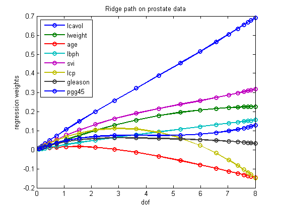

Plot the full L2 regularization path for the prostate data set
load prostate lambdas = [logspace(4, 0, 20) 0]; [n, d] = size(X); nlambdas = numel(lambdas); w = zeros(nlambdas, d); for i=1:nlambdas model = linregFit(X, y, 'lambda', lambdas(i)); w(i, :) = rowvec(model.w); end dof = dofRidge(X, lambdas); figure plot(dof, w, '-o', 'LineWidth', 2); legend(names{1:size(X, 2)}, 'Location', 'NorthWest'); xlabel('dof'); ylabel('regression weights'); title('Ridge path on prostate data'); printPmtkFigure ridgePathDemo